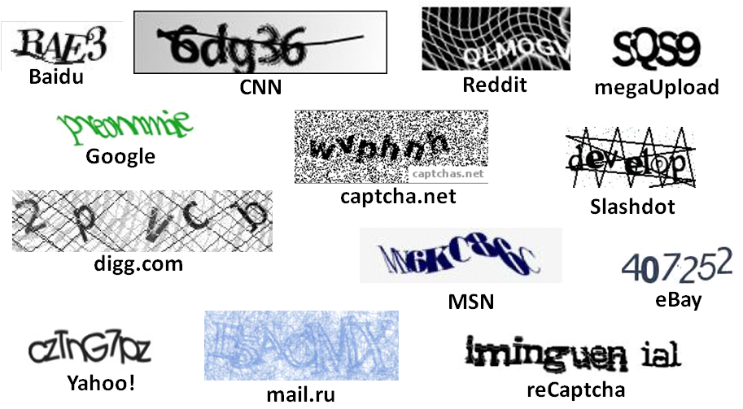
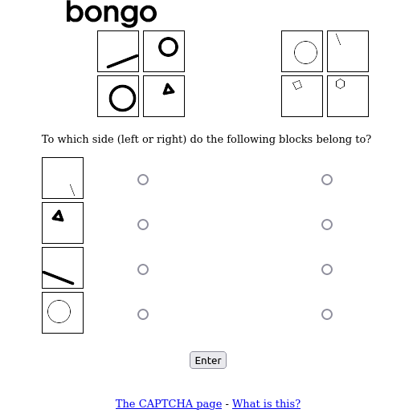
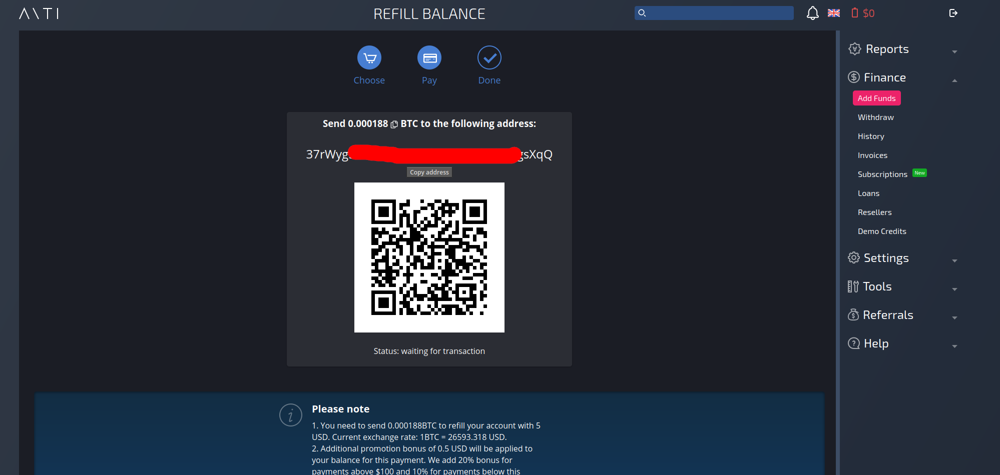
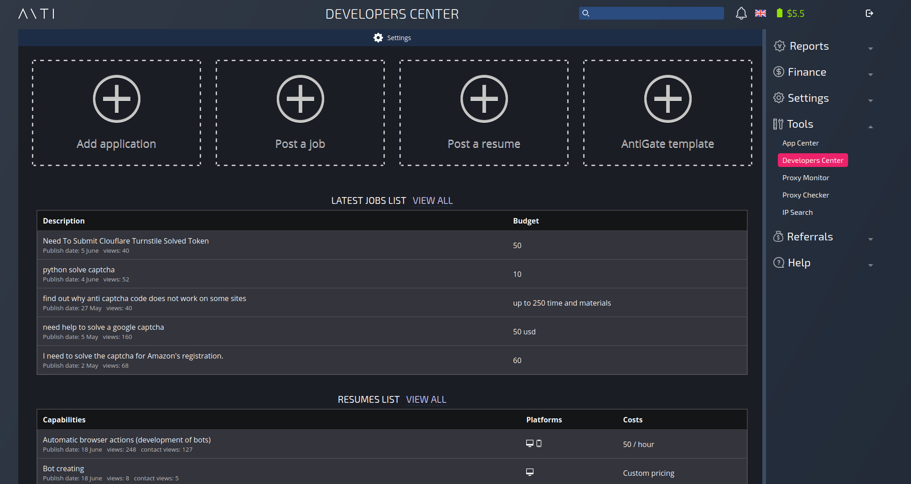

name: dark-center layout: true class: center, middle, dark --- name: dark-left layout: true class: left, dark --- template: dark-center # Solving CAPTCHAs for Fun _by @vavkamil_ .footnote[OWASP Czech Chapter Meeting | Jun 22, 2023] ??? ## Speaker notes - TODO --- ## ~$ whoami - Kamil Vavra (@vavkamil) .left-column[ - Application Security Engineer - Burp Suite Certified Practitioner - Offensive Web Application Security - OWASP Czech Chapter Leader - Moderator of reddit.com/r/bugbounty ] .right-column[ - [vavkamil.cz](https://vavkamil.cz) - [github.com/vavkamil](https://github.com/vavkamil/) - [twitter.com/vavkamil](https://twitter.com/vavkamil) - [linkedin.com/in/vavkamil](https://www.linkedin.com/in/vavkamil/) - [reddit.com/user/_vavkamil_](https://www.reddit.com/user/_vavkamil_) ] ??? ## Speaker notes - TODO --- ## ~$ Agenda .left-column[ - Wtf is CAPTCHA - Top CAPTCHA vendors - reCaptcha (Google) - hCaptcha (Intuition Machines) - Turnstile (Cloudflare) ] -- .right-column[ - How to bypass CAPTCHAs - Top CAPTCHA-solving vendors - Using AI to automate the process <center> <img src="./img/Captcha-780x470.jpg.webp" width="75%"> </center> ] ??? ## Speaker notes - TODO --- ## ~$ Old CAPTCHA examples <center>  </center> ??? ## Speaker notes - TODO --- ## ~$ Old CAPTCHA examples <center> </center> ??? ## Speaker notes - TODO --- ## ~$ Old CAPTCHA examples <center> </center> ??? ## Speaker notes - TODO --- ## ~$ Old CAPTCHA examples <center> </center> ??? ## Speaker notes - TODO --- ## ~$ Old CAPTCHA examples <center> </center> ??? ## Speaker notes - TODO --- template: dark-center # ~$ Wtf is CAPTCHA ??? ## Speaker notes - TODO --- ## ~$ Wtf is CAPTCHA - **C**ompletely - **A**utomated - **P**ublic - **T**uring test to tell - **C**omputers and - **H**umans - **A**part - The term was coined in early 2000's - by **Luis von Ahn**, Manuel Blum, Nicholas J. Hopper, and John Langford - Read the whitepaper [CAPTCHA: Using Hard AI Problems for Security](https://link.springer.com/content/pdf/10.1007/3-540-39200-9_18.pdf) - _Abstract. We introduce captcha, an automated test that humans can pass, but current computer programs can’t pass: any program that has high success over a captcha can be used to solve an unsolved Artificial Intelligence (AI) problem._ - Luis von Ahn later founded reCAPTCHA in 2007, which was acquired by Google in 2009 ??? ## Speaker notes - TODO --- ## ~$ (re)CAPTCHA origins - In a September 2000 chief scientist of the Internet portal Yahoo, Dr. Udi Manber, [conference call](https://web.archive.org/web/20090606234213/https://www.nytimes.com/2002/12/10/science/human-or-computer-take-this-test.html?sec=technology) with a group of computer science researchers at Carnegie Mellon University - Yahoo had a problem with constant spam in their chat rooms and automated registrations of Yahoo e-mail accounts used for spam - Dr. Manuel Blum, a professor at Carnegie Mellon proposed a solution: _"Why not devise a new sort of Turing test, that would be simple for humans but would baffle sophisticated computer programs."_ - He started working on it with his Ph.D. student **Luis von Ahn** (22-year-old) and others. - They registered the [captcha.net](http://www.captcha.net/) domain in 2001 - As a Proof of Concept, they designed two CAPTCHA proposals - Gimpy - Bongo ??? ## Speaker notes - TODO --- ## ~$ (re)CAPTCHA origins .left-column[ #### Gimpy (text-based) - It's based on the human ability to read an extremely distorted and corrupted text, and the inability of current computer programs to do the same - Gimpy works by choosing a certain number of words from a dictionary and then displaying them distorted in an image; - Afterward, Gimpy asks the user to type the words displayed in that image. ] .right-column[ #### Bongo (image-based) - Bongo is a program that asks the user to solve a visual pattern recognition problem. - Bongo displays two series of blocks, and the user must find the characteristic that sets the two series apart. - After seeing the two series of blocks, the user is presented with four single blocks and is asked to determine whether each block belongs to the right series or the left ] ??? ## Speaker notes - TODO - Gimpy was their most reliable system. It was initially built for (and in collaboration with) Yahoo! --- ## ~$ (re)CAPTCHA origins .left-column[ #### Gimpy (text-based) <center> </center> ] .right-column[ #### Bongo (image-based) <center>  </center> ] ??? ## Speaker notes - TODO --- ## ~$ (re)CAPTCHA origins - 2000 - Yahoo has a problem with spam - 2001 - First PoC of CAPTCHA - 2003 - CAPTCHA white paper released - 2007 - reCAPTCHA company started - 2008 - Over 100 million CAPTCHAs displayed/solved every day - 2009 - reCAPTCHA acquired by Google - 2012 - reCAPTCHA began using photographs taken from Google Street View - 2014 - reCAPTCHA is only presenting challenges if it suspects that the user may be a bot - 2017 - A new "invisible" reCAPTCHA introduced, where verification occurs in the background, and no challenges are displayed - 2017 - New reCAPTCHA v3 introduced; This version is a complete shift from the challenge-based approach ??? ## Speaker notes - TODO --- template: dark-center # ~$ CAPTCHA vendors ??? ## Speaker notes - TODO --- ## ~$ CAPTCHA vendors .left-column[ - CAPTCHA Usage Distribution in the Top 1 Million Sites - [trends.builtwith.com](https://trends.builtwith.com/widgets/captcha) | Vendor |.|.|.| Websites |.|.|.| % | |------------------------------------------| | reCaptcha | | | | 211,339 | | | | 21.13 | | hCaptcha | | | | 5,178 | | | | 0.52 | - CAPTCHA Usage Distribution based on # of websites - [wappalyzer.com](https://www.wappalyzer.com/compare/recaptcha-vs-hcaptcha/) | Vendor |.|.|.| Websites |.|.|.| % | |-------------------------------------------| | reCaptcha | | | | 4,002,000 | | | | 96.71 | | hCaptcha | | | | 87,000 | | | | 2.10 | | Turnstile | | | | 49,300 | | | | 1.19 | ] .right-column[ - reCaptcha (Google) - [google.com/recaptcha/about](https://www.google.com/recaptcha/about/) - hCaptcha (Intuition Machines) - [hcaptcha.com](https://www.hcaptcha.com/) - Turnstile (Cloudflare) - [cloudflare.com/products/turnstile](https://www.cloudflare.com/products/turnstile/) ] ??? ## Speaker notes - TODO --- ## ~$ CAPTCHA vendors | reCaptcha - The text-based version used to completely digitize the archives of The New York Times and books from Google Books - It helped to digitize books illegible to be scanned by computers, as well as translate books to different languages - Completed as of 2011 - Within the first year, 440 million words were deciphered; the equivalent of 17,600 books - More than 13 million articles in total have been published (from NYT; dating from 1851 to the present day - Since 2012, they started adding street addresses, street names, house numbers, and even traffic signs - Data from Google Maps <center> </center> ??? ## Speaker notes - TODO --- ## ~$ CAPTCHA vendors | reCaptcha - Nowadays, Google uses reCaptcha to identify objects in images, like buses, crosswalks, fire hydrants, etc. - Google uses user inputs to improve its machine learning models, and specifically, its image recognition models <center> <img src="./img/recaptcha_crosswalks.webp" width="75%"> </center> ??? ## Speaker notes - TODO --- ## ~$ CAPTCHA vendors | reCaptcha - reCAPTCHA v1 (released in 2007) - Distorted text pulled from books, newspapers, or other sources that Optical Character Recognition (OCR) had failed to recognize - reCAPTCHA v2 (released in 2014) - The "I'm not a robot" checkbox was introduced - The images used in these challenges are often photos from Google Street View - Users help train Gmachine learning (image recognition and mapping technologies) - Invisible reCAPTCHA (released in 2017) - This version works in the background to determine if a user is a human or a bot without any interaction - If the system isn't sure, it may present an image-based challenge like in v2 - reCAPTCHA v3 (released in 2018) - It gives each user a score between 0.0 and 1.0, representing the likelihood that they're a human - It gives the website owner more flexibility, as they can decide what to do when the score falls below a certain threshold (like presenting a challenge) ??? ## Speaker notes - TODO --- ## ~$ CAPTCHA vendors | hCaptcha - hCaptcha was introduced in 2018 by Intuition Machines, Inc. - A company that provides AI and machine learning solutions - hCaptcha is designed to solve problems for machine learning models - While Google is using reCAPTCHA to help train its own services, hCaptcha's primary goal is to sell the anonymized human-validated data to companies interested in improving their machine-learning models - One of the key differences between hCaptcha and reCAPTCHA is in their approach to privacy and transparency .left-column[ <center> <img src="./img/hcaptcha_img_1.webp" width="70%"> </center> ] .right-column[ <center> <img src="./img/hcaptcha_img_2.png" width="55%"> </center> ] ??? ## Speaker notes - TODO --- ## ~$ CAPTCHA vendors | Turnstile - Introduced in 2022 by Cloudflare - Invisible alternative to CAPTCHA - A key difference is to solve terrible user experience - It automatically chooses from a rotating suite of non-intrusive browser challenges based on telemetry and client behavior exhibited during a session. - First, it runs a series of small non-interactive JavaScript challenges gathering more signals about the visitor/browser environment - Those challenges include proof-of-work, proof of space, probing for web APIs, and various other challenges - Turnstile also includes machine learning models that detect common features of end visitors who were able to pass a challenge before. - The computational hardness of those initial challenges may vary by visitor, but is targeted to run fast ??? ## Speaker notes - TODO --- ## ~$ CAPTCHA vendors #### reCAPTCHA (Google) - Free up to 1 million assessments per month (then it stop working) - Enterprise free up to 1m, then $1 per 1,000 calls #### hCaptcha (Intuition Machines) - Free up to one million requests per month - Pro $139 per month, 100,000k evaluations per month - Additional evaluations are billed at $0.99 per 1000 requests #### Turnstile (Cloudflare) - Free, but customers are limited to 1 million calls to the siteverify verification endpoint per month - Customers who need additional requests must upgrade to Enterprise Bot Management (really expensive) ??? ## Speaker notes - TODO --- template: dark-center # ~$ CAPTCHA solving vendors ??? ## Speaker notes - TODO --- ## ~$ CAPTCHA solving vendors - Main SaaS platforms .left-column[ - [2captcha.com](https://2captcha.com/anti) - Founded in 2014 - Price ~$1 - $2.99 for 1000 reCAPTCHAs V2 - Solving speed for reCAPTCHA V2 ~25 sec. <center> <img src="./img/price_2captcha.png" width="90%"> </center> ] .right-column[ - [anti-captcha.com](https://anti-captcha.com/) - Founded in 2007; same as reCAPTCHA - Price ~$0.95 - $2 for 1000 reCAPTCHAs V2 - Solving speed for reCAPTCHA V2 ~5 sec. <center> <img src="./img/price_anticaptcha.png" width="90%"> </center> ] ??? ## Speaker notes - TODO --- template: dark-center # ~$ anti-captcha.com ??? ## Speaker notes - TODO --- ## ~$ anti-captcha.com | Welcome ??? ## Speaker notes - TODO --- ## ~$ anti-captcha.com | Refill balance ??? ## Speaker notes - TODO --- ## ~$ anti-captcha.com | Crypto with 20% bonus  ??? ## Speaker notes - TODO --- ## ~$ anti-captcha.com | BTC 1 confirmation ??? ## Speaker notes - TODO --- ## ~$ anti-captcha.com | App center ??? ## Speaker notes - TODO --- ## ~$ anti-captcha.com | Developers center  ??? ## Speaker notes - TODO --- ## ~$ anti-captcha.com | Referrals ??? ## Speaker notes - TODO --- ## ~$ anti-captcha.com - Awesome documentation at [anti-captcha.com/apidoc](https://anti-captcha.com/apidoc) ```bash #!/bin/bash echo "[i] Creating reCaptcha V2 bypass task" response=$(curl -s -H "Accept: application/json" \ -H "Content-Type: application/json" \ -X POST -d '{ "clientKey":"anti-captcha-api-key", "task": { "type":"RecaptchaV2TaskProxyless", "websiteURL":"https://example.com/captcha.php", "websiteKey":"captcha-site-key" }, "softId": 0 }' https://api.anti-captcha.com/createTask) taskId=$(echo "$response" | jq '.taskId') echo -e "\t[i] Waiting 5 seconds for task to complete ...\n" sleep 5 while true; do echo "[i] Requesting task solution" result=$(curl -s -H "Accept: application/json" \ -H "Content-Type: application/json" \ -X POST -d '{ "clientKey":"anti-captcha-api-key", "taskId":'$taskId' }' https://api.anti-captcha.com/getTaskResult) status=$(echo "$result" | jq -r '.status') if [ "$status" == "ready" ]; then gRecaptchaResponse=$(echo "$result" | jq -r '.solution.gRecaptchaResponse') echo -e "\n[!] gRecaptchaResponse:\n\n$gRecaptchaResponse\n" break else echo -e "\t[i] Wait for 3 seconds before retrying ...\n" sleep 3 fi done ``` ??? ## Speaker notes - TODO --- template: dark-center # ~$ kolotibablo.com ## Work for anti-captcha.com ??? ## Speaker notes - TODO --- ## ~$ kolotibablo.com - Founded in 2007 (same as reCAPTCHA) | Work for anti-captcha.com - They used to pay 0.5 cents per correctly entered captcha (earnings ~$3 per hour) - Now you get $1 per 1000 CAPTCHAs solved (earning ~$2 per day) - Bonus system based on monthly volume of solves (e.g., + 15% for 50k solves) - Estimated earnings ~$100 per month, working every day - You earn RP (recaptcha points) for each successful solve - If you do 3+ mistakes per 1k solves, you get banned - You can unban yourself or a friend by spending 2k RP - Top 3 countries (workers): - Venezuela - Indonesia - Vietnam - India - Bangladesh ??? ## Speaker notes - TODO --- ## ~$ kolotibablo.com - You can read inspirational success stories at [kolostories.com](https://kolostories.com) - Not so good reviews at [trustpilot.com](https://www.trustpilot.com/review/kolotibablo.com) - Plenty of people (112) list this as their current/past job at LinkedIn - Data Entry Operator / Data Entry Technician / Data Encoder - Typing job / Typist / Typesetter <center> </center> ??? ## Speaker notes - TODO --- ## ~$ kolotibablo.com | Start page ??? ## Speaker notes - TODO --- ## ~$ kolotibablo.com | Your stats ??? ## Speaker notes - TODO --- ## ~$ kolotibablo.com | Top workers ??? ## Speaker notes - TODO --- ## ~$ kolotibablo.com | Your typing errors ??? ## Speaker notes - TODO --- ## ~$ kolotibablo.com | Unban accounts ??? ## Speaker notes - TODO --- ## ~$ kolotibablo.com | Top referrers ??? ## Speaker notes - TODO --- ## ~$ kolotibablo.com | Top referrers ??? ## Speaker notes - TODO --- template: dark-center # ~$ DEMO TIME ??? ## Speaker notes - TODO --- ## ~$ Solving captchas for profit <video width="95%" controls> <source src="./img/kolotibablo.webm" type="video/webm"> Your browser does not support the video tag. </video> ??? ## Speaker notes - TODO --- ## ~$ Solving captchas for fun <video width="95%" controls> <source src="./img/captcha_burp.webm" type="video/webm"> Your browser does not support the video tag. </video> ??? ## Speaker notes - TODO --- ## ~$ And what about artificial intelligence? - Can ChatGPT solve CAPTCHAs for you? -- - NO, but it can do this: -- .left-column[ ] .right-column[ ] ??? ## Speaker notes - TODO --- ## ~$ Solving captchas for fun <video width="95%" controls> <source src="./img/burp_intruder.webm" type="video/webm"> Your browser does not support the video tag. </video> ??? ## Speaker notes - TODO --- template: dark-center ## THANK YOU ! ### Any questions ? [github.com/vavkamil/owasp-captchas](https://github.com/vavkamil/owasp-captchas) .footnote[OWASP Czech Chapter Meeting | Jun 22, 2023]